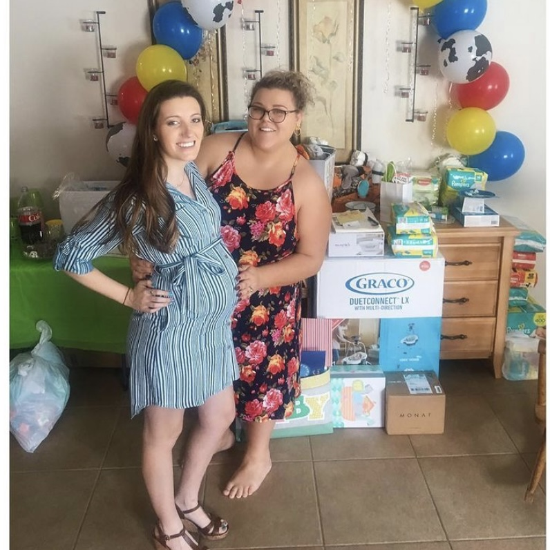

Baby Shower
This is my best friend/sister of ten+ years, Kelly. We met in high school, but our friendship was forged during a 3-week exchange trip to Germany. Although we did live together for a brief few years, almost all of our friendship has been long distance. Long-distance is never a fun thing to do with anyone but we always made it work. This is us at her surprise Toy Story baby shower.